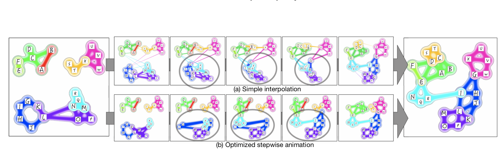
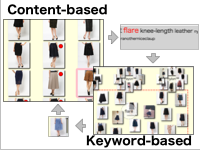
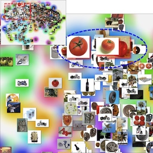
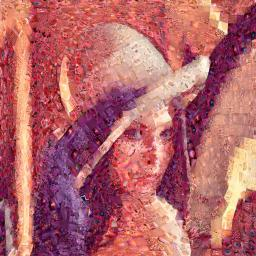

Kazuyo Mizuno（Kazuyo Kojima)

Ph.D. (Computer Science)mail:kazuyokojima[at]gmail.com
Education
- 2017.3 Ph.D. Degree
- Supervisor:Prof. Shigeo Takahashi(2012.4-2015.3), Prof. Takeo Igarashi(2015.4-2017.3)
- Department of Computer Science, Graduate School of Information Science and Technology
- The University of Tokyo
- 2007.3 Master Degree
- Supervisor:Prof. Shigeo Takahashi
- Department of Computer Science, Graduate School of Information Science and Technology
- The University of Tokyo
- 2005.3 Bachelor Degree
- Supervisor:Prof. Kokichi Sugihara
- Department of Mathematical Engineering and Information Physics, School of Enineering
- The University of Tokyo
Work
- 2017.4- Yahoo Japan Corporation
- 2009.6-2014.3 SQUARE ENIX CO.,LTD.
- 2007.4-2009.4 SGI Japan, Ltd.
Projects
|  |
Optimizing Stepwise Animation in Dynamic Set Diagrams |
|  |
AssisTag: Seamless Integration of Content- and Keyword-based Image Exploration |
|  |
Category-Aware Image Exploration |
|  |
Decorative Photomosaics Respecting Human Visual Perception |
{kind=link}
Publications
International Journal Papers (Referred)
- Kazuyo Mizuno, Hsiang-Yun Wu, Shigeo Takahashi, and Takeo Igarashi. Optimizing Stepwise Animation in Dynamic Set Diagrams, Computer Graphics Forum (Proceedings of EuroVis 2019), Vol. 38, No. 3, pp. 13-24, 2019.Best Paper Honorable Mention Award
- Kazuyo Mizuno, Daisuke Sakamoto, Takeo Igarashi: "AssisTag: Seamless Integration of Content-based and Keyword-based Image Exploration for Category Search," Journal of Imaging Science & Technology, 60(6):60401–1–60401–12, 2016.
International Conference Papers (Referred)
- Kazuyo Mizuno, Daisuke Sakamoto, Takeo Igarashi: "AssisTag: Seamless Integration of Content-based and Keyword-based Image Exploration for Category Search," In Proceedings of IS&T/SPIE Conference on Visualization and Data Analysis (VDA ’17), pages 58–69, 2017.
- Gao Yi, Hsiang-Yun Wu, Kazuo Misue, Kazuyo Mizuno, and Shigeo Takahashi: "Visualizing Bag-of-Features Image Categorization Using Anchored Maps," in Proc. of the 7th International Symposium on Visual Information Communication and Interaction (VINCI 2014), pp. 39-48, 2014.
- Kazuyo Mizuno, Hsiang-Yun Wu, Shigeo Takahashi: "Manipulating Bilevel Feature Space for Category-Aware Image Exploration," in Proc. of the 7th IEEE Pacific Visualization Symposium (PacificVis2014), (at Yokohama, Japan), pp. 217-224, March, 2014.
International Conference Papers(Posters) (Referred)
- Yi Gao, Hsiang-Yun Wu, Kazuyo Mizuno, Kazuo Misue, Shigeo Takahashi: "Visualizing Bag-of-Features Image Cateogrization using Anchored Maps," In Proc. of the 7th IEEE Pacific Visualization Symposium (PacificVis2014), (at Yokohama, Japan), pp. ??-??, March, 2014.
- Kazuyo Kojima, Shigeo Takahashi, Tomoyuki Nishita: "Creating Quadrilateral Mosaics from Image Topographic Features," in Proc. of the 3rd symposium on Applied perception in graphics and visualization (APGV'06), (at Boston, MA, USA), ACM Press, p. 144, July, 2006.
Domestic Journal Papers(Referred)
- 小島 加寿代, 高橋 成雄, 岡田 真人: 「視覚特性を考慮した装飾的フォトモザイク」, 情報処理学会, Vol. 49, No.7, pp. 2703 - 2711, 2008．
Domestic Conference Papers（Referred）
- 水野 加寿代, 坂本 大介, 五十嵐 健夫:「AssisTag: 画像内容に基づく閲覧と単語に基づく閲覧を統合した画像探索システム」第24回インタラクティブシステムとソフトウェアに関するワークショップ (WISS ’16), pages 127–132, 2016.
- 小島 加寿代, 高橋 成雄, 岡田 真人: 「視覚特性を考慮したフォトモザイク」 Visual Computing/グラフィクスとCAD合同シンポジウム 2007, pp. 69-74, June, 2007. VC賞(オーラルの部)受賞 GCAD賞受賞 山下記念賞受賞
- 小島 加寿代, 高橋 成雄, 西田 友是: 「グラデーションを考慮にいれた四辺形ベース画像モザイク化」 Visual Computing/グラフィクスとCAD合同シンポジウム 2006, pp. 189-194, June, 2006. VCポスター賞受賞
Domestic Conference Papers（Unreferred）
- 小島 加寿代, 高橋 成雄, 西田 友是: 「画像特徴に沿った四辺形ベース画像モザイク化」 情報処理学会 第68回全国大会 学生セッション 1U-10
Other
- 第１回 若手異分野交流研究会 (招待講演)[Web], 2017.2
- UIST 2016 The University of Tokyo Open Lab (ポスター・デモ展示)[Web][Poster], 2016.10
- 東京大学新聞に「お土産×東大の研究」として記事掲載 2010.5
- 東京大学コミュニケーションセンターより、研究成果画像を用いたマウスパッド販売 2007.8
- 著作物,「視覚特性を考慮に入れたフォトモザイク生成（プログラムとそれにより生成されるフォトモザイク画を含む）」 2007.3
- ビジュアル情報処理研究会 学生研究合宿 (ポスター, 口頭発表), 2006.9
- ビジュアル情報処理研究会学生の会 合同合宿 (ポスター発表), 2005.9
Thesis
- Kazuyo Mizuno: "Manipulation, Visualization, Interaction for Adaptive Category-Aware Image Exploration", Ph.D. Thesis, The University of Tokyo, 2017.3
Supervised by Prof. Takeo Igarashi and Prof. Shigeo Takahashi - Kazuyo Kojima: "A Feature-Based Approach to Quadrilateral Image Mosaics Respecting Human Visual Perception and its Application", Master's Thesis, The University of Tokyo, 2007.3
Supervised by Prof. Shigeo Takahashi
Patents(Domestic)
- 五十嵐 健夫, 坂本 大介, 水野 加寿代. 情報処理装置、情報処理方法、及びプログラム 特願2016-225102、2016年11月出願
Fundings
- JSPS Research Fellowships for Young Scientists (DC2), Apr. 2015 - Mar. 2017
Awards
- Best Paper Award Nominees at EuroVis 2019 (June 2019)
- Information Processing Society of Japan IPSJ Yamashita SIG Research Award, Japan(June 2007)
- Information Processing Society of Japan Excellent research and presentation award, Japan (Jun 2007)
- The Institute of Image Electronics Engineers of Japan VC Award, Japan (Jun 2007)
- The Institute of Image Electronics Engineers of Japan VC Award(Poster), Japan (Jun 2006)